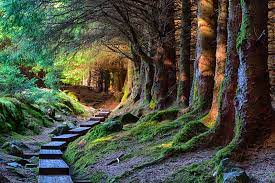
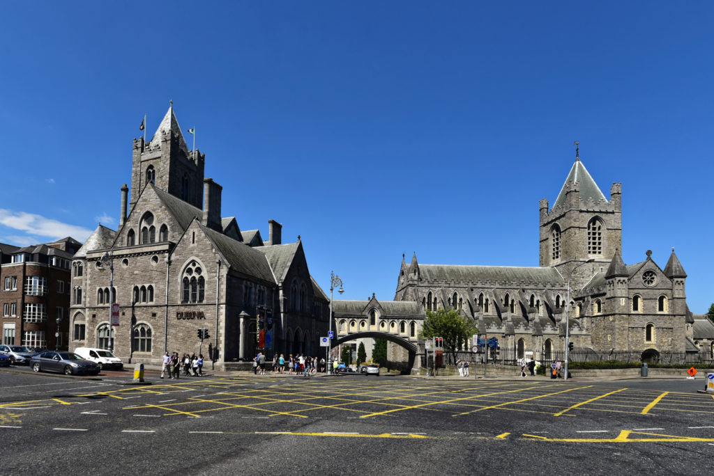

Header logo
Dublin, capital of Ireland
There are a lot of things here, from pubs and beers to hikings and adventures, you can get both experience visiting here, and do you want a tip? Do not buy an umbrella, it does not work there.


Lovely place to hiking in county of Wicklow, one hour by bus from Dublin center
The most famous pub in Ireland, Temple bar
If you like Vikings, this musuem is the best option to you, Dublinia musuem is a time travel to the past to show you how Dublin was colonised for Vikings